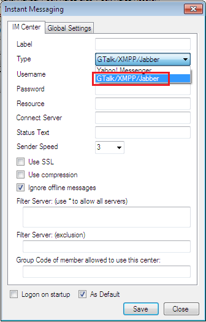
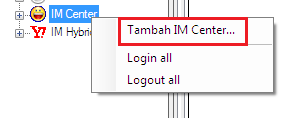
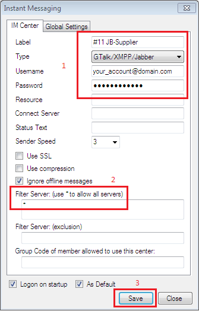
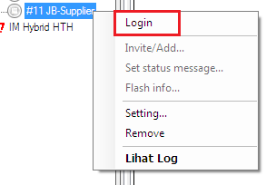
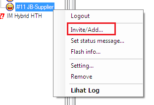
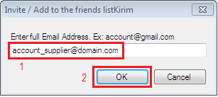
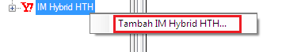
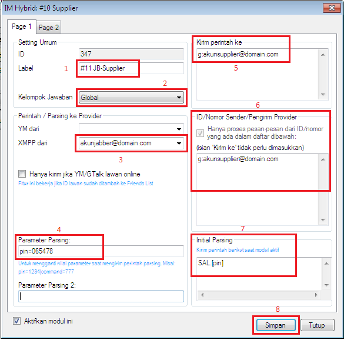

Setting Jabber di OtomaX
Perlu diketahui OtomaX mempunyai modul Gtalk/XMPP/Jabber dimana ini dapat digunakan untuk host to host antar software OtomaX atau software OtomaX dengan software lain yang telah mendukung protokol XMPP. Selain itu juga dapat digunakan menerima transaksi dari Reseller.

Untuk Gtalk layanan chat disediakan oleh Google (buat account disini), sementara untuk Jabber/XMPP disediakan oleh banyak sekali penyedia umumnya dibiayai dan dimaintenance oleh komunitas (buat account disini), dan bahkan Anda dapat membuat layanan chat Jabber/XMPP sendiri dan Anda gunakan di OtomaX. Kami menyediakan jasa pembuatan layanan chat Jabber/XMPP tersebut klik disini, dengan memiliki layanan chat sendiri perusahaan Anda akan terlihat lebih profesional dan tentunya transaksi menjadi lebih lancar.
Setting Jabber di OtomaX ialah sebagai berikut:
- Buat account Jabber, klik disini (pilih salah satu penyedia), atau buat di layanan chat Jabber/XMPP Anda sendiri.
-
Pada OtomaX pilih IM Center -> klik kanan -> pilih Tambah IM Center

-
Pada box Label isi dengan label yang Anda inginkan, misalnya: #11 JB-Supplier; Type pilih Gtalk/XMPP/Jabber; Username isi dengan username account jabber Anda; Password isi dengan password account jabber Anda; Filter Server: (use * to allow all servers) isi tanda bintang (*); terakhir klik tombol Save. Perhatikan gambar di bawah ini:

-
Pilih Modul IM center yang baru Anda buat -> klik kanan -> pilih Login.

PERHATIAN: Apabila account Jabber hanya ingin dijadikan penerima transaksi dari Reseller, maka langkah setting cukup sampai nomor 4 ini.
-
Pilih Modul IM center yang baru Anda buat -> klik kanan -> pilih Invite/Add atau Add buddy (*).

Pada box Enter full Email Address. Ex: account@gmail.com atau Enter JID. Example: account@gmail.com (*) isi dengan account jabber supplier Anda; dan klik tombol OK.

-
Pilih IM Hybrid HTH -> klik kanan -> pilih Tambah IM Hybrid HTH....

-
Pada box Label isi dengan nama yang Anda inginkan, misalnya: #11 JB-Supplier; Kelompok Jawaban pilih kelompok jawaban supplier Anda yang dituju; XMPP dari pilih account jabber Anda; Parameter Parsing isi dengan pin=pinAnda (ganti kalimat pinAnda dengan pin transaksi di supplier Anda); Kirim Perintah ke isi dengan account jabber supplier Anda dengan ditambah tanda g: didepan account (misalnya: akunsupplier@domain.com ditulis g:akunsupplier@domain.com); ID/Nomor Sender/Pengirim Provider isi dengan account jabber supplier Anda ditambah tanda g: di depan seperti di atas; Initial Parsing isi format cek saldo supplier; terakhir klik tombol Simpan.

- Selanjutnya buat parsing dan penangkap jawaban (info lanjut klik disini).
- Selesai.
Catatan 1: Bila menu Tambah IM Center atau Tambah IM Hybrid tidak muncul itu menandakan jumlah modul IM Center dan IM Hybrid Anda telah maksimal sesuai Edisi OtomaX Anda (baca disini); dan jika menginginkan lebih Anda dapat melakukan upgrade (baca disini).
Catatan 2: Bila account jabber supplier lebih dari satu, pada box Kirim ke Anda dapat menulisnya semua dipisah dengan tanda titik koma (misalnya: g:account_supplier1@domain.com;g:account_supplier2@domain.com;g:account_supplier3@domain.com;), hal ini akan berguna jika account_supplier1@domain.com offline maka transaksi akan dialihkan otomatis ke account_supplier2@domain.com dan seterusnya.
Catatan 3: Bila account jabber Anda tidak dapat login di OtomaX silahkan buat account jabber di penyedia lainnya; atau buat layanan chat Jabber/XMPP sendiri (klik disini) agar lebih leluasa memanage layanan chat.
Catatan 4: Bila supplier Anda memberikan reply dengan account jabber berbeda - beda, pada box ID/Nomor Sender/Pengirim Provider isi dengan semua account jabber supplier anda ditambah g: di awal account, misal: account_supplier1@domain.com ditulis g:account_supplier1@domain.com. Pisahkan account satu dengan lainnya dengan titik koma (;).